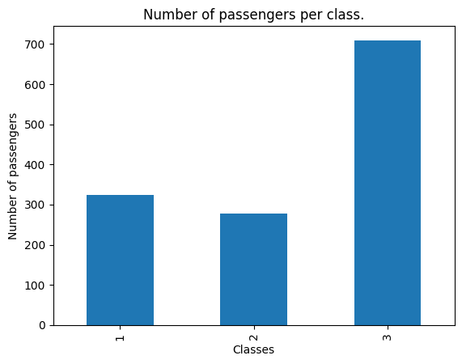
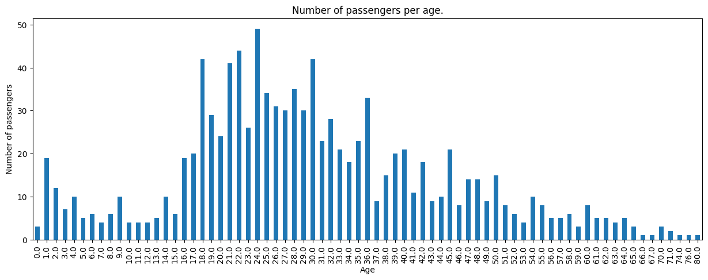
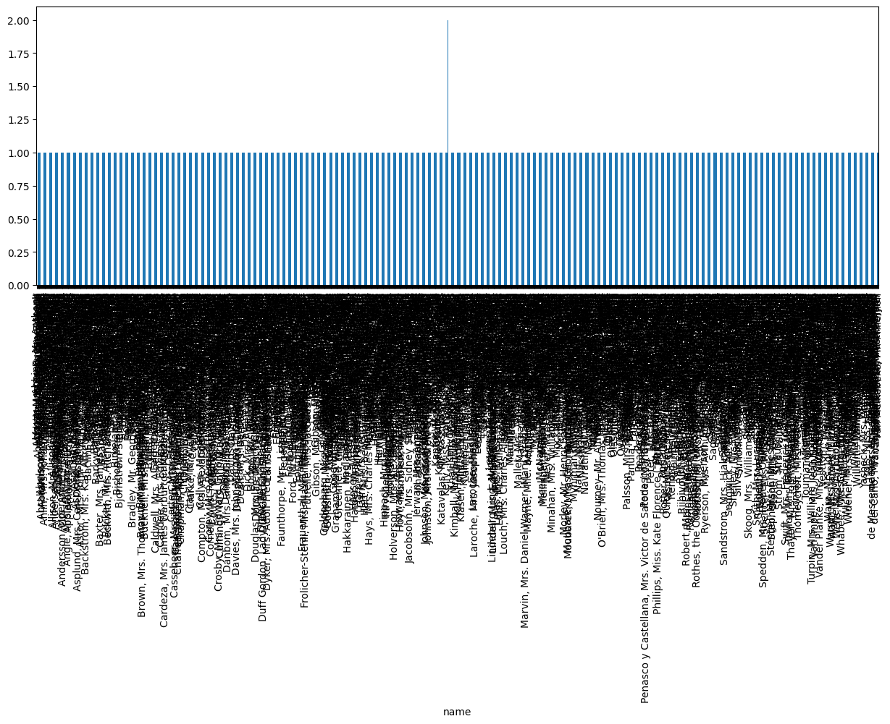
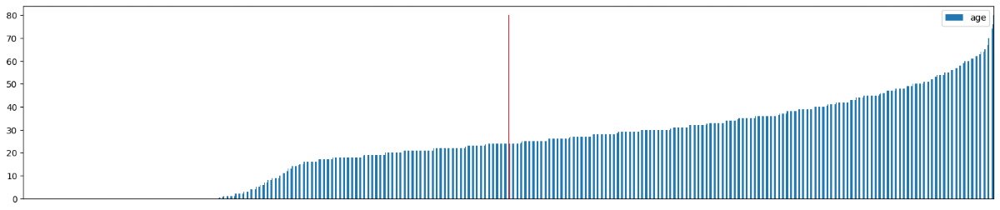
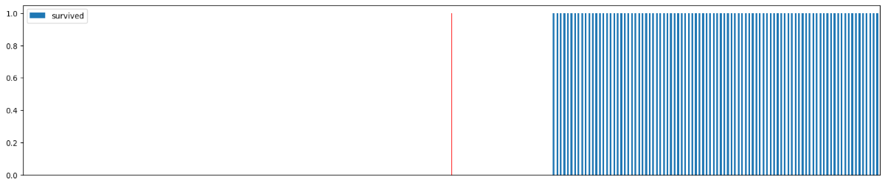
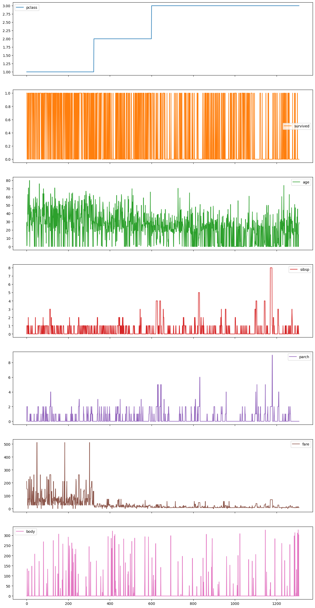

Resumo da Matéria
Introdução
Amostragem (amostra aleatória, sistemática, estratificada) e tendências centrais (moda, média, média, percentil, quartil) e medidas de dispersão (amplitude, variância) são conceitos essenciais de estatística e análise de dados no campo da ciência de dados. Aplicamos esses conceitos em consultas e análises de dados utilizando a plataforma Google Colab e a linguagem de programação Python. Usamos frequentemente o database do Titanic para praticar e compreender melhor esses métodos estatísticos e analíticos importantes.
Colab:

O Google Colab é uma plataforma gratuita que permite que os notebooks Jupyter sejam executados na nuvem. A análise de dados, aprendizado automático e desenvolvimento de modelos de inteligência artificial são atividades em que ela é amplamente utilizada. Colab vem pré-configurado com bibliotecas populares como NumPy, Pandas e TensorFlow, entre outras, e suporte a Python. Além de permitir que vários usuários trabalhem simultaneamente no mesmo notebook, a plataforma permite a integração com o Google Drive para armazenamento e compartilhamento de arquivos e facilita a colaboração. Além disso, o Colab oferece recursos de GPU para acelerar os cálculos computacionais complexos.
Amostragem:
A amostragem é o processo de analisar uma parte representativa de uma população para chegar a conclusões sobre a população como um todo. Em estatística, esse método é vital para estudar grandes populações com economia de tempo e custos.
Instalação de bibliotecas
Importando os dados (Dataframe)
Output:
Amostra Aleatória
A amostragem aleatória permite que todos os indivíduos da população tenham chances iguais e independentes de ser selecionados. Essa abordagem garante que a amostra seja representativa da população como um todo, reduzindo assim os vieses. A seleção é totalmente randomizada e pode ser feita por sorteios, geradores de números aleatórios ou outros métodos.
Amostra Sistemática
A amostragem sistemática é uma abordagem na qual os componentes são escolhidos a partir de intervalos regulares de uma lista ordenada de populações. A cada k-ésimo elemento é selecionado após a determinação de um ponto de partida aleatório; k é um número fixo determinado pela divisão do tamanho da população pelo tamanho da amostra pretendida. Embora seja fácil e eficaz, este método requer que a lista da população não seja cíclica e não inclua vieses.
Amostra Estrátificada
A amostragem estratificada é um método de amostragem em que a população é dividida em subgrupos homogêneos ou estratos de acordo com idades, gêneros e níveis socioeconômicos. Uma amostra aleatória é então extraída de cada estrato. Este método garante que todas as subpopulações pertinentes estejam representadas na amostra. Isso aumenta a precisão e a representatividade dos resultados finais.
Output:
Output:
Output:
Tendências Centrais:
O ponto central ou típico de um conjunto de dados é representado por medidas estatísticas conhecidas como tendências centrais. A moda, a mediana e a média são componentes que são usados para encontrar o valor central em um conjunto de dados. Essas ações facilitam o resumo e a compreensão das características da distribuição de dados.
Moda
A moda é o valor que aparece com maior frequência em um conjunto de dados. Dependendo do conjunto de dados, a moda pode ser classificada como:
Modal
Quando há apenas um valor que é o mais frequente.
Output:
Bimodal
Quando existem dois valores que aparecem com a mesma maior frequência.
Output:
Polimodal
Quando há mais de dois valores com a mesma maior frequência.
Output:
Amodal
Quando não há um valor que aparece com maior frequência (todos os valores têm a mesma frequência ou nenhuma moda).
Output:
Output:
Plotando gráficos para melhor visualização da moda.
Output:
Output:
Output:
Output(1):
Mediana
A mediana é o valor central de um conjunto de dados quando os valores são ordenados em ordem crescente ou decrescente. Se o número de observações for ímpar, a mediana é o valor do meio. Se for par, a mediana é a média dos dois valores centrais. A mediana é uma medida robusta, menos sensível a valores extremos (outliers) do que a média.
Número Ímpar e par de elementos
Output:
Tratando valores ausentes
Output:
Output:
Output:
Aplicando a Mediana no DataFrame Titanic
Output
Output:
Output(1):
Média
A média, ou média aritmética, é calculada somando todos os valores de um conjunto de dados e dividindo essa soma pelo número de valores. A média é amplamente utilizada, mas pode ser influenciada por valores extremos (outliers), o que pode distorcer a interpretação dos dados.
Output:
Plotando um grafico de linha para cada coluna do DataFrame (preencha os valores ausentes com 0)
Output:
Percentil
Um conjunto de dados pode ser dividido em cem partes iguais por percentis. O percentil p indica que 100–p% dos dados estão acima do valor e p% estão abaixo dele. A mediana, que divide os dados em duas metades iguais, é o cinquenta percentil, por exemplo.
Output:
Output:
Output:
Quartil
Um conjunto de dados é dividido em quatro partes iguais por quartis. Os três quartis principais são:
Os quartis, que mostram onde os valores estão em um conjunto de dados, ajudam na compreensão da dispersão e distribuição dos dados.
Output:
Output:
Output:
Output:
Output:
Output:
Medidas de Dispersão
A amplitude pela qual os dados variam em torno de um valor central, como a média ou a mediana, é chamada de medida de dispersão. Elas ajudam na compreensão da consistência e da previsibilidade, fornecendo informações sobre a variabilidade e a distribuição dos dados.
Amplitude
A amplitude é a variação entre os valores máximos e mínimos de um conjunto de dados. Oferecendo uma visão simples da dispersão, ela mostra a extensão total da variação dos dados.
Output:
Output:
Output:
Variância
A variância é uma medida de quão diferentes os valores são da média. Calcula a média dos quadrados das diferenças entre a média do conjunto de dados e todos os valores, dando-lhe uma compreensão mais profunda da variabilidade.